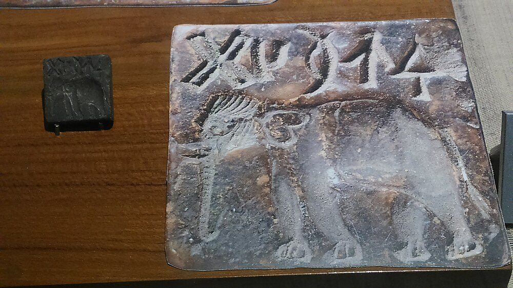
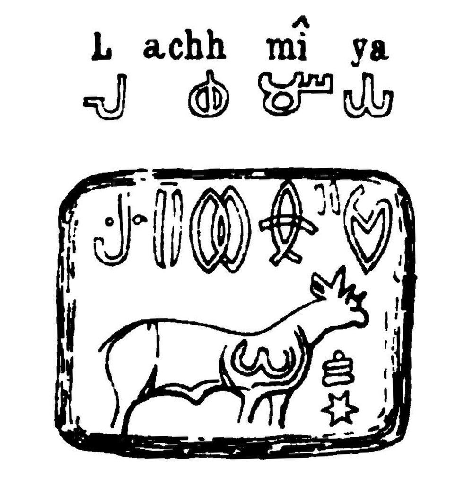
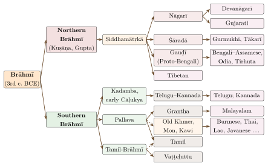
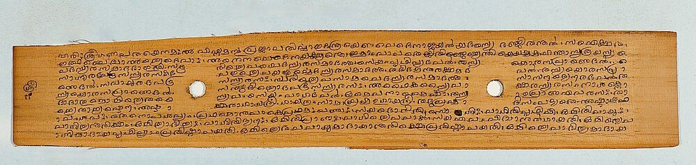
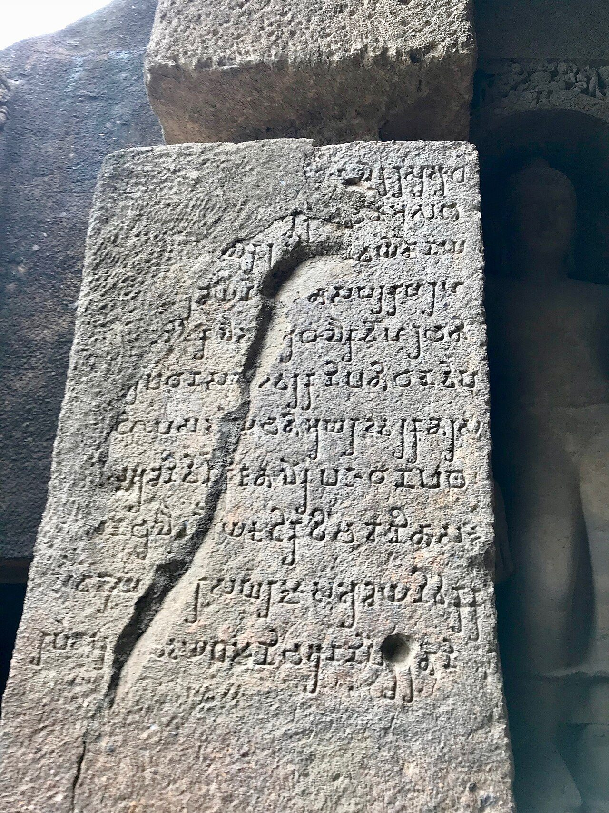

Chapter 12: Writing and Scripts: From the Indus Seals to Devanāgarī¶
liper yathāvadgrahaṇena vāṅmayaṃ
nadīmukheneva samudram āviśat
By learning the script properly he entered the ocean of literature, as one enters the sea by the mouth of a river.
— Kālidāsa, Raghuvaṃśa 3.28, of the young prince Raghu
12.1 Introduction: Writing in an Oral Culture¶
The traditions described in the earlier chapters of this volume were developed and transmitted largely by word of mouth. The Vedas were memorised, Pāṇini’s rules were learned by heart, and even after writing became common, learning “from a book” was considered inferior to learning from a teacher. Yet South Asia also has one of the world’s richest histories of writing. The Indus civilisation used a script that remains undeciphered; from the 3rd century BCE the Brāhmī and Kharoṣṭhī scripts appear in the inscriptions of Aśoka; and Brāhmī became the ancestor of scores of scripts used today across South, Southeast and Central Asia. Perso-Arabic scripts, used in Sindh from the 8th century and across much of northern India from the 11th–12th, form a second great family of writing in the subcontinent (Salomon 1998; Falk 1993).
12.2 The Indus Script¶
The earliest writing in South Asia is found on objects of the mature Indus (Harappan) civilisation, c. 2600–1900 BCE: stamp seals, sealings, tablets, pottery and a few other objects, of which some 4,000 or more inscribed examples are known. Estimates of the number of distinct signs range from about 400 to about 700, depending on how variants are counted (Mahadevan 1977; Parpola 1994). The inscriptions are very short, typically about five signs, and even the longest has fewer than thirty. They were usually written from right to left, as the spacing and cramping of signs at the left end of inscriptions shows, and the number of signs suggests a logo-syllabic system that, like other early scripts, combined word-signs with signs for sounds. The language or languages written are unknown. Proposals include an early form of Dravidian, argued at length by Asko Parpola and Iravatham Mahadevan, Indo-Aryan, Munda and lost languages of other families (Figure 12.1).


No proposed decipherment has won general acceptance, and none can be tested without longer texts or a bilingual inscription. Steve Farmer, Richard Sproat and Michael Witzel argued in 2004 that the Indus signs did not encode language at all but were a system of non-linguistic symbols; other scholars have rejected this argument on statistical and archaeological grounds (Farmer et al. 2004). Rajesh Rao and his colleagues, for example, found that the sequences of Indus signs show a degree of order, measured as conditional entropy, close to that of known writing systems and unlike that of non-linguistic sign systems (Rao et al. 2009); the significance of such measures has itself been disputed. The question remains open. Claims that the Indus script has been read as Sanskrit, or as any other known language, and claims that Brāhmī descends from it, should be treated with great caution: there is a gap of more than a thousand years between the end of the Indus script and the first Brāhmī inscriptions, and no intermediate stages have been found (Figure 12.2).


12.3 Brāhmī¶
Brāhmī is the ancestor of almost all the indigenous scripts of South and Southeast Asia and of the Tibetan script. Its earliest securely dated examples are the inscriptions of Aśoka (r. c. 268–232 BCE), found across the subcontinent.
12.3.1 Characteristics¶
Brāhmī is an abugida or “alphasyllabary” (Section 12.6): each consonant sign includes an inherent vowel a, other vowels following a consonant are shown by marks attached to it, and vowels at the beginning of a syllable have separate signs. It is written from left to right, though a few very early examples run right to left. Aśokan Brāhmī already distinguishes aspirated from unaspirated and retroflex from dental consonants, the distinctions that matter in Indo-Aryan phonology, and has signs for the long vowels, but it does not yet write consonant clusters consistently.
The Aśokan scribes wrote with a certain economy. Double consonants, which were very frequent in the Prakrits, are usually written as single ones, and a nasal before another consonant is generally written with the anusvāra dot; vowel length is often marked inconsistently. A reader therefore had to know the language to read the text correctly, much as a reader of unvowelled Arabic or Hebrew does. Over the following centuries the system was refined: conjunct signs for consonant clusters were developed, especially once the script was used for Sanskrit, with its many clusters, and the regional forms of the letters began to diverge (Salomon 1998).
12.3.2 The origin of Brāhmī¶
Where Brāhmī came from is one of the most debated questions in Indian epigraphy (Salomon 1998; Falk 1993).
- Semitic derivation
- The majority view among epigraphists, set out in detail by Georg Bühler in the 1890s and defended in modified form by Richard Salomon and Harry Falk, is that the basic shapes of many Brāhmī consonant signs were adapted from a Semitic script, most probably Aramaic, the administrative script of the Achaemenid Persian empire, which ruled the north-west of the subcontinent in the 6th–4th centuries BCE. The principle of the inherent vowel and of vowel marks, the systematic distinctions of aspiration and retroflexion, and the left-to-right direction would then be Indian innovations, made by people familiar with Indian phonetic analysis. Kharoṣṭhī, which clearly derives from Aramaic, provides a parallel.
- Indigenous origin
- Other scholars have argued that Brāhmī was an independent Indian creation, pointing to its systematic phonetic design and to the weakness of some of the proposed letter-by-letter correspondences with Semitic prototypes. A derivation from the Indus script was proposed in the 19th century and is still sometimes advanced, but the chronological gap and the absence of intermediate forms tell against it.
A related debate concerns the date of the script’s creation. Falk argued that Brāhmī was created in the early Maurya period, perhaps for Aśoka’s own inscriptions, on the model of Kharoṣṭhī (Falk 1993). Others point to evidence for earlier writing: inscribed potsherds from Anuradhapura in Sri Lanka, dated by their archaeological context to about the 4th century BCE (Coningham et al. 1996); and inscribed sherds from Tamil Nadu (Kodumanal, Porunthal and other sites), for which the excavators, led by K. Rajan, have reported radiocarbon dates in the 5th century BCE. These reports have not been independently confirmed, and how far the dates of the layers apply to the inscriptions themselves remains disputed. Pāṇini’s grammar mentions writing (lipi), which suggests that some script was known in the north-west in his time, possibly an Aramaic one (Section 5.2.2).
12.3.3 Tamil-Brāhmī¶
A distinctive variety of Brāhmī was used in the Tamil country, mainly for short inscriptions in caves (often Jain rock shelters), on pottery and on coins. It was adapted to Tamil phonology, with signs for the sounds ḻ, ḷ, ṟ and ṉ, and with different conventions for marking vowel-less consonants. Iravatham Mahadevan’s corpus placed most of these inscriptions between the 2nd century BCE and the 4th century CE (Mahadevan 2003); the more recent radiocarbon evidence mentioned above has been read as pushing the beginnings earlier, but this remains debated. Tamil-Brāhmī is the ancestor of the Vaṭṭeḻuttu script. The modern Tamil script is usually derived from the southern script of the Pallava period, the parent also of Grantha, with some features carried over from the older Tamil tradition; the details are debated (Salomon 1998).
12.3.4 The Aśokan inscriptions¶
Aśoka’s inscriptions, the first large body of Indian writing, already show that the choice of script followed the region: Brāhmī over most of the subcontinent, Kharoṣṭhī in the north-west, and Greek and Aramaic at the western edge of the empire (Table 12.1).
| Site | Type | Script | Notes |
|---|---|---|---|
| Girnar (Gujarat) | Major Rock Edicts | Brāhmī | Language with western features |
| Dhauli and Jaugada (Odisha) | Major Rock Edicts | Brāhmī | Includes the “separate edicts” for Kaliṅga |
| Shahbazgarhi and Mansehra (Pakistan) | Major Rock Edicts | Kharoṣṭhī | North-western Prakrit |
| Kandahar (Afghanistan) | Rock inscriptions | Greek and Aramaic | Translations of Aśoka’s message for western subjects |
| Sarnath | Pillar | Brāhmī | The lion capital is the national emblem of India |
| Nigali Sagar and Lumbini (Nepal) | Pillars | Brāhmī | Record Aśoka’s visits to Buddhist sites |
The decipherment of Aśokan Brāhmī by James Prinsep in 1837, building on the work of others, opened the history of ancient India to modern scholarship; until then the script had been unreadable for many centuries. Prinsep worked from bilingual coins of the Indo-Greek kings, with Greek on one side and Kharoṣṭhī or Brāhmī on the other, and from short donative inscriptions at Sanchi that all ended with the same two letters, which he correctly read as dānaṃ “gift”. Kharoṣṭhī was deciphered in the same years with the help of the bilingual coins. Indian epigraphy then grew into a discipline, with the work of Alexander Cunningham, Georg Bühler and J. F. Fleet, the founding of the journal Epigraphia Indica (1888), and the systematic survey of inscriptions by the Archaeological Survey of India and by Indian epigraphists such as D. C. Sircar (Salomon 1998).
12.4 Kharoṣṭhī¶
Kharoṣṭhī was used in the north-west, in Gandhāra and neighbouring regions, from about the 3rd century BCE to the 3rd century CE, and in Central Asia, on documents from Niya and other sites, until the 4th century or later. It is written from right to left, like its Aramaic model. Like Brāhmī it marks vowels by signs attached to consonants, but it distinguishes long and short vowels poorly. It was the script of Gāndhārī Prakrit in inscriptions, on coins (often together with Greek), in administrative documents and in Buddhist manuscripts; the birch-bark scrolls found since the 1990s in Afghanistan and Pakistan are among the oldest Buddhist manuscripts in any language. Unlike Brāhmī, it left no descendants.
12.5 The Family of Brāhmī Scripts¶
From the early centuries CE Brāhmī diversified into regional styles, which by the late 1st millennium had become distinct scripts (Figure 12.3).

12.5.1 Devanāgarī¶
Devanāgarī developed from the Nāgarī script of northern and western India, which took its characteristic form around the 8th–10th centuries. The name is usually explained as “(script) of the city of the gods”, but its origin is uncertain. It became the most widely used script for Sanskrit, and it is used today for Hindi, Marathi, Nepali, Konkani, Maithili, Dogri, Bodo and other languages. Its most visible feature is the headstroke (śirorekhā) that joins the letters of a word; its consonants, in the traditional phonetic order, are shown in Figure 2.2 (Chapter 2).
12.5.2 Other scripts of India¶
- Bengali–Assamese and Odia
- developed from the eastern script often called Gauḍī or Proto-Bengali; Tirhuta (Mithilākṣara), used for Maithili, belongs to the same branch.
- Gurmukhī
- used for Punjabi, especially in the Sikh scriptures, was standardised in the 16th century, traditionally by Guru Aṅgad, from scripts of the Śāradā–Laṇḍā family.
- Telugu and Kannada
- developed from the scripts of the Kadamba and Cāḷukya dynasties and remained a single script until about the 13th century.
- Grantha
- (“book” script) was used in the Tamil country to write Sanskrit, which the Tamil script could not represent fully; it influenced both the modern Tamil and the Malayalam scripts.
- Tamil
- has a small inventory of letters, matching Tamil phonology; it is written with the puḷḷi (dot) to mark a consonant without a vowel, a device already found in Tamil-Brāhmī.
- Regional and commercial scripts
- such as Modi (for Marathi), Kaithi (in northern India) and the Mahājanī scripts of merchants were widely used until the 20th century.
12.5.3 Perso-Arabic scripts¶
From the 11th century, with the establishment of Persian-speaking rulers in northern India, the Arabic script, in its Persian form, became the script of administration and of a large literature in Persian. In the nastaʿlīq style it is used today for Urdu and Kashmiri; Sindhi uses a form of the Arabic script standardised in the 1850s; and Punjabi in Pakistan is written in the Perso-Arabic Shahmukhi script. The adaptation of the Arabic alphabet to Indo-Aryan required new letters, for example for the retroflex consonants and the aspirates. The Hindi–Urdu controversy of the 19th and 20th centuries was in large part a conflict over scripts, Devanāgarī against Perso-Arabic, with lasting political consequences (King 1994; Rai 2001).
12.5.4 New scripts¶
Several scripts have been created in modern times for languages with no script of their own or as a statement of identity. The best known is Ol Chiki, devised for Santali by Raghunath Murmu in the 1920s and now in official use; others include the Warang Citi script for Ho, and revived or reformed scripts such as Meetei Mayek for Manipuri. Many tribal and minority languages are written in Devanāgarī, Bengali, Odia or Latin script (Table 12.2).
| Script | Languages (selection) |
|---|---|
| Devanāgarī | Hindi, Marathi, Nepali, Konkani, Maithili, Dogri, Bodo, Sanskrit; also Santali, Sindhi and Kashmiri in some usage |
| Bengali–Assamese | Bengali, Assamese, Manipuri (alongside Meetei Mayek), Bishnupriya |
| Gurmukhī | Punjabi (in India) |
| Gujarati | Gujarati, Kutchi |
| Odia | Odia |
| Telugu | Telugu |
| Kannada | Kannada, Tulu, Konkani (in Karnataka), Kodava |
| Malayalam | Malayalam |
| Tamil | Tamil, Saurashtra (in some usage) |
| Perso-Arabic (nastaʿlīq) | Urdu, Kashmiri, Sindhi (Arabic-based Sindhi script) |
| Ol Chiki | Santali |
| Meetei Mayek | Manipuri (Meitei) |
| Latin | Mizo, Khasi, Garo, many Naga languages; Konkani in Goa (alongside Devanāgarī) |
| Tibetan | Ladakhi, Sikkimese and other Tibetic languages |
12.6 The Abugida Principle¶
Brāhmī and its descendants represent a distinct type of writing system. The linguist Peter T. Daniels named it the abugida (from the first letters of the Ethiopic script, which works on the same principle) (Daniels and Bright 1996). In an abugida:
-
each consonant sign carries an inherent vowel (a in Indian scripts);
-
other vowels after a consonant are written by marks (mātrā) attached to it, above, below, before or after;
-
a special mark (the virāma) cancels the inherent vowel;
-
consonant clusters are written with combined forms (saṃyuktākṣara) or with the virāma. See Table 12.3.
| Type | Examples | Basic unit | Vowels |
|---|---|---|---|
| Alphabet | Greek, Latin | phoneme | Separate letters for vowels and consonants |
| Abjad | Arabic, Hebrew | consonant | Vowels usually unwritten or marked optionally |
| Abugida | Brāhmī scripts, Ethiopic | consonant with inherent vowel | Marks attached to consonants |
| Syllabary | Japanese kana | syllable | Each sign a whole syllable |
| Logo-syllabic | Chinese; probably the Indus script | morpheme and syllable | Mostly unmarked |
The traditional order of the letters in all these scripts follows the phonetic analysis of the Śikṣā texts: vowels first, then the stops arranged by place and manner of articulation, then the semivowels, sibilants and h (Chapter 2). It is a lasting monument of ancient phonetics. Whether the original designers of Brāhmī applied phonetic theory directly, or the order was imposed on the script later, is not known.
12.7 Indian Scripts Beyond South Asia¶
Brāhmī-derived scripts spread far beyond South Asia (Figure 12.3). South Indian scripts of the Pallava type were carried to Southeast Asia, where inscriptions in Old Khmer and Cham appear from the 5th–7th centuries and the Kawi script of Old Javanese, the ancestor of the Javanese and Balinese scripts, from the 8th. Mon and then Burmese writing derive from the same southern source, the Burmese inscriptions beginning in the 11th–12th centuries, and the Thai and Lao scripts were adapted from Old Khmer, the Thai script from the late 13th century. In the north, the Tibetan script was created in the 7th century from a northern Brāhmī script of the Siddhamātṛkā type, by tradition by Thon mi Sambhoṭa (Section 14.2.1), and Siddhamātṛkā itself travelled with Buddhism to China and Japan.
12.7.1 Central Asia¶
Along the Silk Road, Indian scripts were adapted to languages of quite different families. Kharoṣṭhī was used for Gāndhārī administrative documents in the kingdom of Shanshan (around Niya, in the Tarim basin) in the 3rd–4th centuries. Brāhmī, in its northern “Central Asian” varieties, was used to write Sanskrit Buddhist texts and also two local Indo-European languages: Tocharian, spoken in the oases of Kucha and Turfan, and Khotanese, an Iranian language of the kingdom of Khotan. To write these languages the scribes created new letters for sounds absent from Sanskrit, an early example of the adaptability of the Brāhmī system.
12.7.2 Siddham in East Asia¶
The Siddhamātṛkā script, which flourished in northern India from about the 6th to the 10th century, was carried to China with Buddhist texts and used there to write Sanskrit mantras and dhāraṇīs. The Japanese monk Kūkai (774–835), founder of the Shingon school, brought the study of Siddham (Japanese shittan) to Japan, where it is still practised as a sacred calligraphy. The ordering of the Japanese kana syllabary (the gojūon, “fifty sounds”) is generally believed to reflect the phonetic order of Sanskrit learned through these studies.
12.8 Writing Materials and Epigraphy¶
- Palm leaf
- The main writing material of South India, Sri Lanka and Southeast Asia, and widely used in the north. In the south the letters were incised with a stylus and the leaf rubbed with lamp-black; incision favours rounded letter forms, since straight horizontal strokes would split the leaf along its grain (Figure 12.4).
- Birch bark
- Used in Kashmir and the north-west; the Gāndhārī Buddhist scrolls and the Bakhshali mathematical manuscript are written on it.
- Stone and copper
- Inscriptions on rock, pillars, cave walls and temple walls, and land grants on copper plates, are the main sources for the history of the scripts. Tens of thousands of inscriptions are known, the majority from South India (Salomon 1998). Figure 12.5 shows a Brāhmī inscription in a cave at Kanheri.
- Cloth, wood and paper
- Paper came into use in India from about the 11th–13th centuries, spreading from the north-west and becoming common under the Delhi Sultanate and the Mughals.




12.9 Dating Inscriptions¶
The development of letter forms allows an experienced epigraphist to date an undated inscription, often to within a century or two, by comparison with dated ones. Dated inscriptions use a variety of eras, whose starting points had to be worked out by modern scholars from inscriptions that mention datable events or astronomical details (Salomon 1998). The most important are listed in Table 12.4.
| Era | Year 0 or 1 corresponds to | Notes |
|---|---|---|
| Vikrama | 57–56 BCE | Used widely in northern and western India; still in use |
| Śaka | 78 CE | Used widely in western and southern India and in Southeast Asia; the basis of the Indian national calendar |
| Gupta | 319–320 CE | Used in the Gupta empire and later in Gujarat (as the Valabhī era) |
| Kalacuri–Cedi | 248–249 CE | Used in central and western India |
| Harṣa | 606 CE | Used in northern India and Nepal |
| Kollam | 824–825 CE | Used in Kerala |
| Hijrī | 622 CE | Islamic lunar era, used in Persian and Arabic inscriptions |
Regnal years, counted from a king’s accession, are also very common, especially in early inscriptions such as those of Aśoka, which are dated by years since his consecration.
12.10 Print and Digital Encoding¶
Printing in Indian scripts began with missionaries. Tamil books were printed in the 16th century by Portuguese Jesuits; a Tamil Christian catechism printed in 1578 is usually cited as the first book in an Indian script. Printing in Bengali and Devanāgarī developed in the late 18th and early 19th centuries in and around Calcutta. Charles Wilkins and the Bengali craftsman Pañcānan Karmakār cut the Bengali types for N. B. Halhed’s Bengali grammar (1778), and Pañcānan later worked for the Serampore Mission Press, which printed books in many Indian languages. The need to cast types for hundreds of conjunct consonants shaped the appearance of printed scripts, and typewriters and later computer fonts imposed further simplifications.
In the digital age, the abugida principle had to be represented in a form computers could process. The Indian standard ISCII (1991) and the international Unicode standard encode each Brāhmī-derived script as a sequence of consonant, vowel and virāma characters, arranged in the traditional phonetic order; the conjunct forms and the placement of vowel signs are then produced by the font and the rendering software. The design follows, in effect, the analysis of the phoneticians: the stored text records the sounds in their spoken order, while the visual arrangement on the page is a matter of display. Unicode now also encodes historical scripts such as Brāhmī, Kharoṣṭhī, Grantha and Śāradā, and newer ones such as Ol Chiki and Warang Citi, which makes the digital edition of inscriptions and manuscripts possible.
12.11 Numerals and Zero¶
Brāhmī inscriptions already use special signs for numbers, but in a non-positional system with separate signs for the units, the tens, a hundred and a thousand. The decimal place-value system with nine digits and a sign for zero developed in India during the first half of the 1st millennium CE. Brahmagupta’s Brāhmasphuṭasiddhānta (628 CE) gives rules for calculating with zero as a number. The earliest securely dated inscriptions using a zero in place-value notation are from Southeast Asia (Cambodia and Sumatra, 683–684 CE), and the earliest in India proper is an inscription at Gwalior dated 876 CE; earlier copper-plate dates in decimal notation exist but some of them are suspect. The system passed through Arabic and Persian scholarship to Europe, where its numerals are still called “Arabic”, though Arab authors called them “Indian” (Plofker 2009). Its history is treated in Volume 11, Gaṇita.
Further Reading¶
-
Salomon, Richard. 1998. Indian Epigraphy: A Guide to the Study of Inscriptions in Sanskrit, Prakrit, and the Other Indo-Aryan Languages. Oxford University Press.. — The standard guide to Indian epigraphy and scripts.
-
Falk, Harry. 1993. Schrift Im Alten Indien: Ein Forschungsbericht Mit Anmerkungen. ScriptOralia 56. Gunter Narr.. — On the origin of writing in India.
-
Mahadevan, Iravatham. 2003. Early Tamil Epigraphy: From the Earliest Times to the Sixth Century a.d. Harvard Oriental Series 62. Cre-A and Department of Sanskrit and Indian Studies, Harvard University.. — The corpus of Tamil-Brāhmī inscriptions.
-
Parpola, Asko. 1994. Deciphering the Indus Script. Cambridge University Press.. — A major attempt to interpret the Indus script.
-
Daniels, Peter T., and William Bright, eds. 1996. The World’s Writing Systems. Oxford University Press.. — On the world’s writing systems, including the Indian ones.
-
Farmer, Steve, Richard Sproat, and Michael Witzel. 2004. “The Collapse of the Indus-Script Thesis: The Myth of a Literate Harappan Civilization.” Electronic Journal of Vedic Studies 11 (2): 19–57.. — The argument that the Indus signs were not writing; to be read with the replies to it, such as Rao et al. (2009).
-
Sircar, D. C. 1965. Indian Epigraphy. Motilal Banarsidass.. — A classic handbook of Indian epigraphy, with lists of eras and dynasties.
-
Dani, Ahmad Hasan. 1963. Indian Palaeography. Clarendon Press.. — A history of Indian scripts with tables of letter forms.
-
Coningham, R. A. E., F. R. Allchin, C. M. Batt, and D. Lucy. 1996. “Passage to India? Anuradhapura and the Early Use of the Brahmi Script.” Cambridge Archaeological Journal 6 (1): 73–97.. — The Anuradhapura evidence for early Brāhmī.